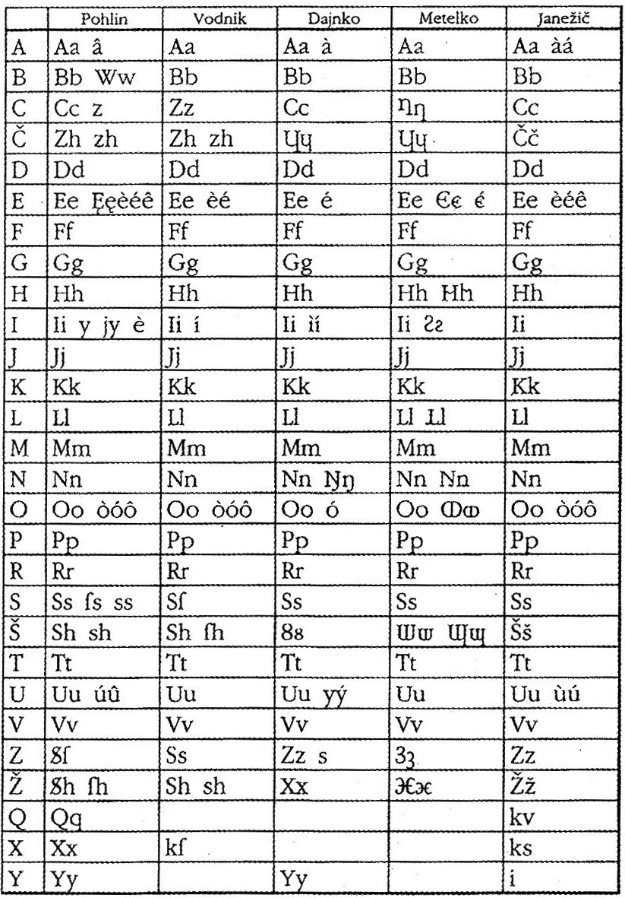
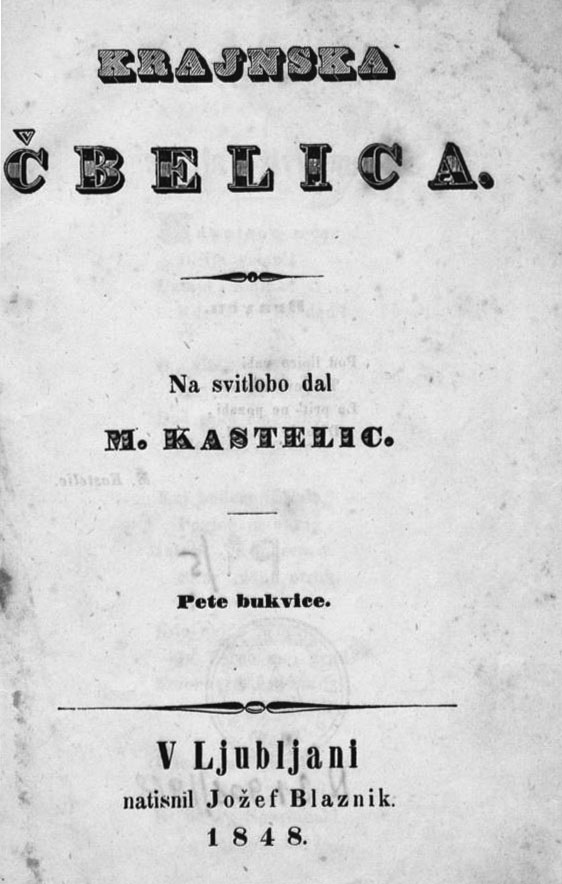
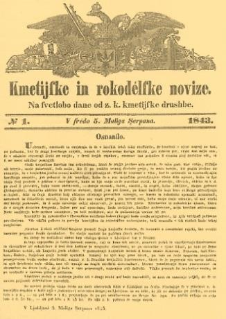

I. Razvoj zgodovinskih dežel in Slovenci
1
Po oblikovanju dežel v srednjem veku so večini
slovenskega ozemlja vladali Habsburžani, naši predniki
pa so živeli v različnih habsburških deželah.
Povežite srednjeveška mesta in dežele tako, da na črto v levem stolpcu vpišete ustrezno črko iz desnega stolpca. Pri reševanju si pomagajte s sliko 8 v barvni prilogi. 3 točke
Povežite srednjeveška mesta in dežele tako, da na črto v levem stolpcu vpišete ustrezno črko iz desnega stolpca. Pri reševanju si pomagajte s sliko 8 v barvni prilogi. 3 točke

| Mesto | Dežela |
|---|---|
| Radovljica | B – Kranjska |
| Ptuj | C – Štajerska |
| Tolmin | A – Goriška |
| Brežice | C – Štajerska |
| Krško | B - Kranjska |
| Višnja Gora | B - Kranjska |
2
Plemstvo je imelo primarno vojaške in upravne
dolžnosti, a se je rado tudi zabavalo. Za to so, med
drugim, skrbeli potujoči vitezi, ki so jih zato tudi
pogosto upodabljali na freskah ali v kodeksih. Pri
reševanju si pomagajte z besedilom.
Takole je upodobljen vitez pl. Gornjegrajski iz gradu Gradišče ob Dreti v Zgornji Savinjski dolini: 3 točke
Takole je upodobljen vitez pl. Gornjegrajski iz gradu Gradišče ob Dreti v Zgornji Savinjski dolini: 3 točke
Dvome o pesnikovi provenienci denimo tokrat na stran in
si oglejmo miniaturo, ki v kodeksu bolj kot katera druga
ponazarja temo takratne viteške lirike, minnedienst –
službo izvoljeni gospe. Vitez je pred visokorodno damo –
frouwe s klapouhim kužkom v naročju, kar je bilo tedaj v
modi, pokleknil na koleno in se ji med izročanjem
pergamentnega lista, na katerem lahko slutimo
verzificirano ljubezensko izpoved, proseče zazrl v oči.
Stopar, I., 2005: Svet viteštva, str. 101.
Viharnik. Ljubljana
2.1 Kako so
imenovali takšne potujoče viteze?
Rešitev (ena od)
- Viteški pevci
- Minezengerji
- Trubadurji
2.2 S katerimi
zvrstmi umetnosti so zabavali dvorjane?
Rešitev (dve od)
- Pesništvo / lirika
- Pripovedništvo
- Glasba
- Petje
2.3 Pojasnite, kako se je izkazovala mecenska vloga plemstva.
Rešitev (ena od)
- Podpirali so gradnjo cerkva / samostanov
- Podpirali so umetnike / slikarje / kiparje
3
Mitološko izročilo, geografski opisi in grška
zemljepisna imena kažejo, da so Grki poznali naše
ozemlje.
2 točki
Jazon je šel po omenjeni poti iz Črnega morja do Donave,
iz Donave po Savi in iz Save v Ljubljanico, ki je v
spomin na to potovanje – tako meni Plinij, dobila ime
Nauportus, ladjenosec.Frantar, Š., in drugi, 2019: Zgodovina 2, str.
192.
3.1 Kdo je glede na
mitološko izročilo vodil Argonavte?
Rešitev
Jazon
3.2 Pojasnite, ali
je v besedilu, ki je del mita, tudi kaj zgodovinske
resnice o današnjem slovenskem ozemlju.
Rešitev (ena od)
- Reke, navedene v mitu, obstajajo.
- Nauportus je bilo rimsko ime za Vrhniko.
- Omenjene reke so bile plovne.
4
Rimsko osvajanje današnjega slovenskega ozemlja se je
začelo z istrsko vojno (178–177 pr. Kr).
Pri reševanju si pomagajte s sliko 4 v barvni prilogi. 3 točke
Pri reševanju si pomagajte s sliko 4 v barvni prilogi. 3 točke

4.1 Navedite štiri
keltska plemena, ki so poseljevala današnje
slovensko ozemlje.
Rešitev (štiri od)
- Noriki · Latobiki · Tavriski · Serapili · Sereti · Histri · Karni
4.2 S katero
pomembno trgovsko potjo se je povečalo zanimanje
Rimljanov za osvajanje tega ozemlja?
Rešitev
Jantarjeva pot
4.3 Pojasnite, zakaj
je bilo to ozemlje pomembno z vojaškega vidika.
Rešitev (ena od)
- Prostor je bil odskočna deska za osvajanje proti vzhodu.
- Kraški prehodi so omogočali lahek prehod iz Podonavja v Italijo.
- Številna ljudstva so čez prelaze ogrožala Rim.
5
Rimljani so ozemlje današnje Slovenije razdelili na tri
upravne enote, ki so na sliki 5 v barvni prilogi
označene s številkami 1, 2 in 3.
K številkam pripišite imena upravnih enot. 2 točki
K številkam pripišite imena upravnih enot. 2 točki

| Št. na karti | Ime upravne enote |
|---|---|
| 1 | Regio X – Venetia et Histria / Italija |
| 2 | Norik |
| 3 | Panonija |
Za 3 pravilne 2 t. · za 2 → 1 t.
6
Rimljani so na današnjem ozemlju Slovenije ustanovili
več mest z različno stopnjo samouprave.
3 točke
Rečno pristanišče in lega ob cesti, ki je povezovala
Emono s Siscijo, sta mu v prometu določala izjemen
pomen. Verjetno je bila tu prekladalna postaja za tiste
rečne tovore, ki so jih zaradi nevarnih brzic v zgornjem
toku Save raje preložili na vozove.Zakladi tisočletij, str. 212. Modrijan, 1999.
6.1 Pojasnite
razloge za ustanavljanje rimskih mest na današnjem
slovenskem ozemlju.
Rešitev (ena od)
- Lažje vojaško ali gospodarsko nadziranje območja.
- Širjenje rimskega vpliva (uprava, kultura).
6.2 Katero rimsko
mesto je opisano v besedilu?
Rešitev
Neviodun / Drnovo pri Krškem /
Neviodunum
6.3 Navedite vrsti
statusa, ki so ga lahko imela rimska mesta.
Rešitev
Kolonija ali
municipij
7
Preko prostora današnje Slovenije so v rimskem času
potekale pomembne trgovske poti.
2 točki
S kakovostnimi predmeti iz železa iz osrednje Slovenije
so akvilejske družine trgovale v Panoniji. Pohorski
marmor je bil v oddaljenih krajih ob Dravi in Donavi
cenjeno blago. Ob Dravi navzdol so svoje izdelke
prodajale petovionske lončarske delavnice. Severna Istra
je imela presežke v vinu in olju, Kras in gorata območja
pa v živinoreji.Zakladi tisočletij, str. 263.
7.1 Navedite štiri
vrste blaga/surovin, ki so jih izvažali z našega
ozemlja.
Rešitev (štiri od)
- Izdelki iz železa · marmor · lončarski izdelki · olje · vino · živina
7.2 Katere prometne
povezave so omogočale živahno trgovino?
Rešitev (ena od)
- Dober cestni sistem.
- Plovne reke.
8
V poznoantičnem obdobju sta se na današnjem slovenskem
ozemlju začeli širiti dve monoteistični religiji.
2 točki
O njej se ni smelo pisati ali govoriti. Obredi so
potekali v zaključenih moških krogih. /…/ Mitra je bog
dobrega, bog sonca. Rodil se je iz skale in se
neprestano boril proti zlu.Kladnik, D., 2015: Slovenija v zgodbah, str.
26.
8.1 Katera religija,
opisana v besedilu, se je razširila k nam z vzhoda?
Rešitev
Mitraizem
8.2 V čem se je novo
verovanje razlikovalo od prvotne rimske religije?
Rešitev
Nova religija je bila
monoteistična – verovanje v
enega boga (rimska je bila politeistična).
II. Razvoj zgodovinskih dežel in Slovenci
9
Po propadu Zahodnega rimskega cesarstva so na današnje
slovensko ozemlje prihajala različna ljudstva. Pri
reševanju si pomagajte s sliko 6 v barvni prilogi.
2 točki

9.1 Katero germansko
ljudstvo se je leta 568 odselilo v Italijo, njihov
prostor pa so poselili Slovani?
Rešitev
Langobardi
9.2 Pojasnite, v čem
sta se način življenja in gospodarstvo Slovanov
razlikovala od staroselcev.
Rešitev (ena od)
- Preproste metode obdelovanja zemlje (požigalništvo).
- Živeli v velikih družinah, vaških skupnostih.
- Preživljali se z lovom, ribolovom, živinorejo.
- Bili so pogani.
10
Prihod Slovanov je v Vzhodnih Alpah povzročil postopno
uveljavitev nove kulture.
2 točki
Na novem ozemlju so Slovani našli razvito antično
oziroma rimsko kulturo. /…/ Materialna in cerkvena
kultura je bila z izjemo romanskih obalnih mest med
naseljevanjem Slovanov večinoma uničena. Od prvotnega
prebivalstva so prevzeli številna krajevna in vodna
imena.Slovenska zgodovina v besedi in sliki, str.
22.
10.1 Navedite dve
negativni posledici slovanske poselitve za
staroselce.
Rešitev (dve od)
- Propad cerkvene organizacije / cerkvene kulture
- Propad antičnih mest / materialne kulture
- Propad rimskega prava
- Propad latinskega jezika
- Usahnila je trgovina
10.2 Pojasnite, kaj
nakazuje, da so staroselci živeli v sožitju s
Slovani.
Rešitev (ena od)
- Ohranjena imena keltskega in rimskega izvora (Ig, Kras, Sava).
- Krajevna imena z imenom Vlah kažejo na sobivanje z romanskim prebivalstvom.
11
Prva znana državna tvorba, v katero so bili vključeni
tudi alpski Slovani, je bila Samova plemenska
zveza.
1 točka
11 Kako je nastala
prva slovanska državna tvorba?
Rešitev (ena od)
- Uspešno so se uprli Avarom pod vodstvom Sama.
- Alpski Slovani so se povezali v samostojno državno tvorbo.
12
Po razpadu Samove plemenske zveze so samostojnost
ohranili le Karantanci. Pri reševanju si pomagajte s
sliko 7 v barvni prilogi.
Obkrožite črke pred tremi pravilnimi trditvami. 3 točke
Obkrožite črke pred tremi pravilnimi trditvami. 3 točke

A – Karantanijo je vodil knez, ki so ga spremljali
krščeniki.
B – Središče Karantanije je bilo Gosposvetsko polje
s Krnskim gradom.
C – Knez Valuk je bil prvi pokristjanjeni knez.
D – Karantanci so knezu izročali oblast z obredom
ustoličevanja.
E – Vojni ujetniki in podrejeni staroselski
krščanski prebivalci so bili svobodni.
F – Izguba samostojnosti je povezana s sodelovanjem
v uporu Ljudevita Posavskega.
Za 6 pravilnih 3 t. · za 5–4 → 2 t. · za 3–2 → 1 t.
13
Pokristjanjevanje Karantancev je bilo povezano z
vrnitvijo Gorazda in Hotimirja iz Bavarske.
3 točke
Irska cerkev je širila krščansko vero z drugačnimi
sredstvi kot uradna frankovska cerkev. Ne z mečem in
silo, marveč z nenasilnimi sredstvi nauka /…/. Poleg
tega je upošteval irski nauk stare poganske verske
običaje in jih poskušal prilagoditi krščanstvu, v veliki
meri je upošteval tudi ljudski jezik /…/.Kos, M., 1985: Srednjeveška kulturna, družbena in
politična zgodovina Slovencev, str. 197.
13.1 Kateri škof je
vodil pokristjanjevanje v Karantaniji?
Rešitev
Modest
13.2 Navedite tri
značilnosti irske metode pokristjanjevanja.
Rešitev (tri od)
- Niso uporabljali prisile.
- Uporabljali so jezik ljudstva.
- Poganske šege so vključevali v krščanstvo.
- Cerkvena desetina je bila nižja kot drugod.
- Opirali so se na domače vrhnje sloje.
13.3 Pojasnite, kako
se je razrešil spor med salzburško škofijo in
oglejskim patriarhatom.
Rešitev (ena od)
- Določena je bila cerkveno-upravna meja med Salzburgom in Oglejem.
- Reka Drava je bila meja med njima.
14
Po ukinitvi kneževin Karantanije in Karniole je
slovenski prostor prvič spadal v državni okvir severno
od Alp.
Pri reševanju si pomagajte s sliko 8 v barvni prilogi. 2 točki
Pri reševanju si pomagajte s sliko 8 v barvni prilogi. 2 točki
14.1 V katero
cesarstvo je bila v drugi polovici 10. stoletja
vključena večina slovenskega prostora?
Rešitev
Sveto rimsko cesarstvo / Rimsko-nemško
cesarstvo
14.2 S kakšnim
namenom so bile ustanovljene mejne krajine (marke)?
Rešitev (ena od)
- Obramba pred Madžari.
- Nadzor nad tem delom cesarstva.
15
Med prvimi prejemniki posesti na današnjem slovenskem
ozemlju so bile škofije.
2 točki
Temelje gospostva je leta 973 z dvema darovnicama
položil cesar Oton II., ki je freisinškemu škofu
Abrahamu v osrednjih predelih Kranjske podelil velik
teritorialni kompleks. /…/ Na ravnino je dal škof
naseliti koloniste z Bavarske /…/.Štih, P., Simoniti, V., 1996: Slovenska zgodovina
do razsvetljenstva, str. 76–77.
15.1 Kateri pomembni
zemljiški gospodje so bili lastniki Loškega
gospostva?
Rešitev
Freisinški škofje
15.2 Zakaj je
naseljevanje sprožilo jezikovno-etnične spremembe?
Rešitev (ena od)
- Kolonisti so prišli iz nemških dežel (Bavarska, Koroška).
- Nekateri so ohranili jezikovne posebnosti → nastali so jezikovni otoki.
16
Celjski grofje so bili domača dinastija z oblastjo nad
velikim delom slovenskega ozemlja.
2 točki
V pozni jeseni leta 1456 /…/ Oklepljeni vitez je
raztrgal bandera knežjih grofij in prelomil rajnikov grb
z besedami bolečine: Grofje Celjski in nikoli več.Stopar, I., 1986: Celje, str. 39.
16.1 O katerem
celjskem grofu govori besedilo?
Rešitev
Ulrik II.
16.2 Pojasnite, kaj
so pomenile besede »grofje Celjski in nikoli več«.
Rešitev (ena od)
- Z Ulrikom II. je bilo konec celjske dinastije (ni imel potomcev).
- S Habsburžani so imeli dedno pogodbo, zato so posesti prevzeli ti.
17
V visokem srednjem veku je življenje plemstva in kmetov
na Slovenskem potekalo na gradovih in v vaseh. Podeželje
pa je zaznamovalo tudi nastajanje mestnih naselij in s
tem pojav meščanstva.
4 točke
Kandidat je izbral A (Meščanstvo) ali B (Kmetje). Rešitve za oba primera:
| Vprašanje | A – Meščanstvo | B – Kmetje (podložniki) |
|---|---|---|
| 17.1 Navedite, s katerimi dejavnostmi se je ukvarjal izbrani sloj prebivalstva. | Trgovina, obrt | Poljedelstvo, živinoreja, obrt in podeželska trgovina |
| 17.2 Pojasnite njegov pravni položaj | Osebno svobodni; mestni svet, mestni sodnik. | Osebno nesvobodni; podrejeni zemljiškemu gospodu; tlaka in dajatve; gospod ima sodno oblast. |
| 17.3 Kaj je pomenil rek »mestni zrak osvobaja«? | Kmet, ki je prebežal v mesto in ostal dovolj dolgo, je postal osebno svoboden. | |
| 17.4 Pojasnite, kako so se zavarovali pred turškimi vpadi. | Utrdili obzidje; skrivali se za njim. | Skrivali se v gozdovih in kraških jamah; gradili tabore (utrdbe) okoli cerkva. |
18
Prebivalci srednjeveških mest so bili jezikovno in
etnično različni
1 točka
18 Katera dva jezika
sta se poleg slovenščine še uporabljala v mestih na
Slovenskem?
Rešitev (dve od)
Nemščina · Italijanščina ·
Latinščina
19
Gradovi, dvori, cerkve, zlasti pa samostani so bili
kulturna in intelektualna središča.
2 točki
| Kulturno središče | Oznaka | Opis |
|---|---|---|
| Gradovi | C | Trubadurji in viteški pevci (minezengerji) |
| Ptujska gora | D | Celjski oltar |
| Kartuzija Žiče | A | Največja knjižnica na Slovenskem |
| Cistercijanski samostan Stična | B | Rokopisi, tudi v slovenščini |
Za 4 pravilne 2 t. · za 3–2 → 1 t.
20
V 15. stoletju so se začeli turški vpadi na naše
ozemlje. Ogrožene dežele so bile prisiljene organizirati
obrambo.
2 točki
20.1 Kako se je
imenoval obrambni pas, ki so ga organizirali na
Hrvaškem?
Rešitev
Vojna krajina
20.2 Pojasnite, kdo
je v tem obrambnem pasu opravljal vojaško službo.
Rešitev
Uskoki / pravoslavno vlaško
živinorejsko prebivalstvo / pribežniki pred
Turki
21
Zaostritev odnosov med zemljiškimi gospodi in kmeti je
na prehodu iz 15. v 16. stoletje izzvala velike kmečke
upore. Pri reševanju si pomagajte z besediloma ter s
sliko 9 v barvni prilogi.
V obliki krajšega razmišljanja navedite letnico kmečkega upora; naštejte tiste slovenske dežele, ki so bile del tega upora; razložite značilnosti upora; pojasnite razloge za neuspeh kmetov in kakšne so bile posledice za uporne kmete oziroma voditelje upora. 5 točk
V obliki krajšega razmišljanja navedite letnico kmečkega upora; naštejte tiste slovenske dežele, ki so bile del tega upora; razložite značilnosti upora; pojasnite razloge za neuspeh kmetov in kakšne so bile posledice za uporne kmete oziroma voditelje upora. 5 točk

Kandidat je obkrožil A (Vseslovenski kmečki upor) ali B
(Hrvaško-slovenski kmečki upor). Rešitve za oba primera:
| Kriterij (1 t.) | A – Vseslovenski kmečki upor | B – Hrvaško-slovenski kmečki upor |
|---|---|---|
| Letnica | 1515 | 1572 / 1573 |
| Dežele | Štajerska, Koroška, Kranjska, Goriška | Štajerska, (del) Kranjske |
| Značilnosti | Zahtevali »staro pravdo«; neuspešno posredovali pri cesarju Maksimilijanu; ohranile se prve slovenske tiskane besede. | Želeli cesarsko namestništvo v Zagrebu; svobodno trgovanje; sami skrbeti za mejo; uskoki so zavrnili sodelovanje in pomagali fevdalcem. |
| Razlogi za neuspeh | Preveliko zaupanje v cesarja · slaba izurjenost in oborožitev · slaba povezanost uporniških jeder · neenotnost v zahtevah | |
| Posledice | Povrnitev škode · puntarski pfening · dodatna tlaka · mučenje/poboj upornikov | Enako + Matija Gubec javno usmrčen v Zagrebu |
22
V 16. stoletju se je v slovenski prostor preko
humanizma širila reformacija. Osrednja osebnost
slovenskega protestantizma je bil Primož Trubar.
2 točki
V vsakem mestu, trgu in pri slednji fari je treba imeti
učitelje in šolarje: v mestih in trgih, da se učijo
latinsko in nemško, pri farah pa, da se od duhovnikov,
kaplanov in cerkovnikov učijo slovenskega črkopisa,
branja in pisanja.
22.1 V katerem delu
je Trubar predstavil organizacijo protestantske
cerkve?
Rešitev
Cerkovna ordninga / Cerkveni red
22.2 Kakšna je bila
njegova vizija glede uporabe jezika in poučevanja?
Rešitev (ena od)
- Zavzel se je za poučevanje slovenščine v župnijskih šolah.
- Zavzel se je za versko izobraževanje v slovenščini.
23
Poleg Trubarja so na področju literarnega ustvarjanja
delovali še drugi protestantski pisci.
Poleg Trubarja so na področju literarnega ustvarjanja delovali še drugi protestantski pisci. 2 točki
Poleg Trubarja so na področju literarnega ustvarjanja delovali še drugi protestantski pisci. 2 točki
| Delo | Avtor |
|---|---|
| Zimske urice | Adam Bohorič |
| Prevod Svetega pisma | Jurij Dalmatin |
| Otročja Biblija | Sebastijan Krelj |
| Abecednik | Primož Trubar |
Za 4 pravilne 2 t. · za 3–2 → 1 t.
24
Protestantski pisci so v času od 1550 do 1595 izdali
okoli 50 slovenskih knjig, od katerih so bile nekatere
tiskane tudi pri nas.
2 točki
Kmalu po tem, ko je bila v Nemčiji natisnjena prva
slovenska knjiga, Trubarjev Katekizem (1550), je
Ljubljana dobila prvo tiskarno na Slovenskem. Leta 1575
jo je ustanovil /…/ iz njegove delavnice /…/ prva na
Slovenskem natisnjena slovenska knjiga, tj. Dalmatinov
prevod knjige Jezus Sirah.
24.1 Kdo je bil
ustanovitelj te tiskarne v Ljubljani?
Rešitev
(Janž) Mandelc / Mandelčeva
tiskarna
24.2 Pojasnite, kaj
so s tiskanjem verskih knjig želeli doseči
protestanti.
Rešitev
Protestanti so želeli, da bi
Sveto pismo / verski nauk
postal dostopen vsakemu verniku v lastnem
jeziku.
25
Navedenim dogodkom dodajte ustrezno letnico: 828, 869,
976, 1436, 1478, 1564.
3 točke
| 1436 | Celjski grofje so bili povzdignjeni v državne kneze. |
| 828 | Karantanija je izgubila notranjepolitično neodvisnost. |
| 1564 | Trubar je za potrebe protestantske cerkve izdal Cerkveni red. |
| 1478 | Koroški kmečki upor je bil prvi večji upor na Slovenskem. |
| 869 | Kocelj je zavladal kot samostojni knez v Spodnji Panoniji. |
| 976 | Cesar Oton II. je ustanovil vojvodino Koroško. |
Za 6 pravilnih 3 t. · za 5–4 → 2 t. · za 3–2 → 1 t.